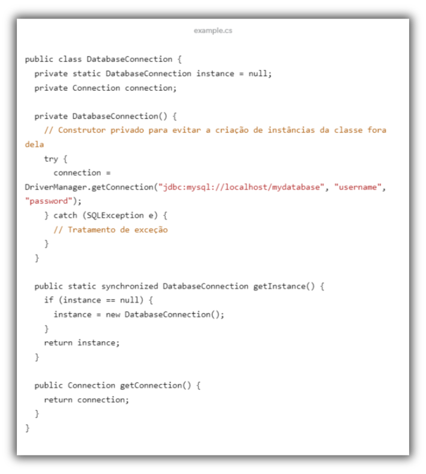
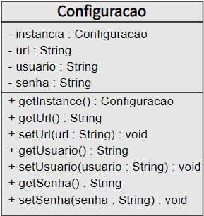

O padrão Singleton é um padrão de projeto de software que garante que apenas uma instância de uma determinada classe seja criada durante a execução de um programa. Isso pode ser útil em situações em que você precisa de uma única instância de uma classe para ser compartilhada por várias partes do programa, como por exemplo em uma classe responsável por gerenciar uma conexão com um banco de dados.
Para implementar o padrão Singleton, você deve criar uma classe que tenha um construtor privado e um método estático que retorne a única instância da classe. O método estático pode verificar se a instância já foi criada e, se sim, retorná-la. Caso contrário, ele cria uma nova instância da classe e a retorna. Dessa forma, todas as outras partes do programa que precisarem da instância da classe usarão a mesma instância.
O padrão Singleton pode ser útil em diversas situações, como por exemplo:
- Evitar problemas de concorrência em programas multi-threaded;
- Evitar a criação desnecessária de objetos, o que pode levar a problemas de desempenho;
- Gerenciar recursos compartilhados de forma mais eficiente.
Além disso, o padrão Singleton pode tornar o código mais fácil de entender e manter, já que todas as partes do programa que usam a instância da classe estão usando a mesma instância.
Embora o padrão Singleton possa ser útil em muitas situações, ele também tem algumas desvantagens, como por exemplo:
Pode tornar o código mais complexo, especialmente se você precisar garantir que a instância da classe seja thread-safe;
Pode ser difícil de testar, já que a instância da classe é compartilhada por várias partes do programa;
Pode levar a problemas de acoplamento entre as diferentes partes do programa que usam a instância da classe.
Ao implementar o padrão Singleton, é importante seguir algumas boas práticas para garantir que ele funcione corretamente e não cause problemas. Algumas dessas boas práticas incluem:
Garantir que a instância da classe seja thread-safe, se necessário;
Evitar a criação desnecessária de objetos, mas também não criar a instância da classe muito cedo;
Evitar o uso excessivo do padrão Singleton, já que ele pode levar a problemas de acoplamento e dificultar o teste de código;
Usar injeção de dependência em vez do padrão Singleton, se possível, já que isso pode tornar o código mais modular e mais fácil de testar.
Uma classe que gerencia a conexão com o banco de dados é um bom exemplo de quando o padrão Singleton pode ser útil. Ao criar apenas uma instância da classe, você pode garantir que todas as partes do programa que precisam acessar o banco de dados estejam usando a mesma conexão, o que pode melhorar o desempenho e evitar problemas.

Neste exemplo, a classe DatabaseConnection é implementada como um Singleton, com um construtor privado e um método estático getInstance() que retorna a única instância da classe. O método getInstance() verifica se a instância já foi criada e, se não, cria uma nova instância da classe. O método getConnection() retorna a conexão com o banco de dados.
Aqui está um exemplo de diagrama de classes UML que representa a implementação do padrão Singleton em uma classe chamada Configuracao:

Neste diagrama, a classe Configuracao tem uma única instância representada pelo atributo instancia do tipo Configuracao. O construtor da classe é privado, impedindo a criação de instâncias fora da classe. O método estático getInstance() retorna a única instância da classe, criando-a se ainda não existir. Os métodos getUrl(), setUrl(), getUsuario(), setUsuario(), getSenha() e setSenha() são os métodos públicos da classe que podem ser usados para acessar e modificar as configurações armazenadas na única instância da classe.